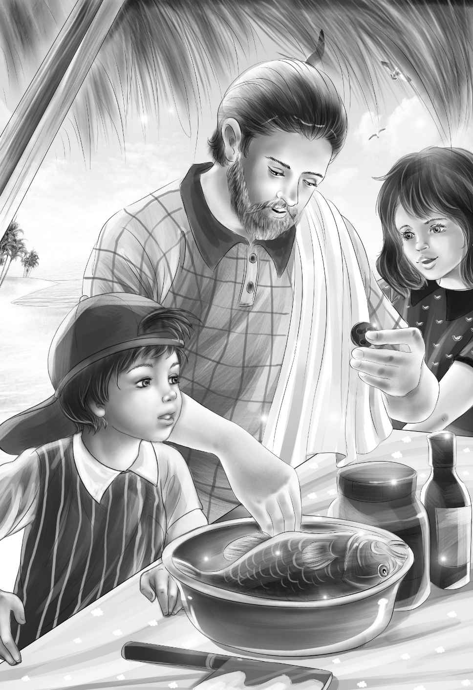

Clues
第二天吃早餐的时候，杰西问道：“纳思，咱们今天吃炖鱼怎么样？”
“是因为爷爷喜欢吃这个。”亨利补充道。
“我也喜欢，”迈克说，“我超爱吃鱼呢！”
“这太可笑啦，迈克，”班尼说，“你喜欢吃鱼？谁信啊？”
“当然‘喜欢’，我还‘喜欢’牛奶，‘喜欢’饼干！”迈克冲口而出。
纳思朝迈克笑了笑，“今天你们可以吃到压缩饼干啦！噢，对了，按你的说法，应该叫它们饼干。”
说着，他们走下海滩，去洗杯子和贝壳碗。班尼和迈克跑在最前面，一路捡着彩色的石子和贝壳，纳思则拿着装钓鱼线的铁盒子。
“快来看这个竖起来的超级大贝壳，”迈克说，“班尼，快过来，帮我把它挖出来。”两个小男孩用手将大贝壳四周的沙子刨开。
“哇，亨利，好大的贝壳啊！”班尼喊道，“足足有洗衣盆那么大！”
亨利走了过来，他仔细打量了一下贝壳，然后大声喊道：“纳思，快过来！真有洗衣盆那么大的贝壳呢！这到底是什么啊？”
奥登先生抢先跑了过来。“这是海龟壳。”他下了结论。
“海龟？”迈克惊讶万分，“我从来没见过这么大的海龟。”
“我倒是见过。”纳思说，“要是这只海龟还活着，准得有三百多磅了，真是个大家伙——这附近生长的全都是大家伙。”
“我们用海龟壳当炖锅吧！”迈克提议。
“这主意太酷啦！”维莉说，“我们刚要做炖鱼，就找到了炖锅。”
于是，两个小男孩继续劲头十足地刨着沙子，最后一把抓住海龟壳，将它拽了出来，只见壳里满是湿湿的沙子。
“来，把我的壳洗干净！”迈克提议。
“哈，这是你的壳么，迈克？”亨利打趣道，“不过这么说也没错，海龟壳确实是你先发现的。”
“这壳是属于大家的啦，”迈克说，“我的意思只是说我先看到的而已。”
海龟壳很沉，大家一起费了好大力气才把它挪到了水里。
“就放在这儿吧，”杰西提议道，“让海浪把它冲刷干净。”
正在大家把这个大玩意儿放下来的时候，班尼突然喊了起来：“你们快看，快看！”
维莉兴奋地叫道：“爷爷，快过来看迈克的壳！”
纳思也说：“奥登先生，能麻烦你过来看看龟壳的背面吗？”
原来，龟壳上竟然刻着花纹，更蹊跷的是，这花纹和小水洼里用小石子排成的图案一模一样。
“两个图案完全一样！”班尼叫道。他猛地坐了下来，“看，都是在中间有一个大圆圈，其他花纹也是一样的。”
杰西慢慢地说：“咱们现在可以确定了——绝对有人住在岛上！虽说这龟壳很古老，但小水洼里的图案是新摆的啊，否则那些小石头早就会在涨潮的时候被冲到海里去了。”
“多好看的龟壳，只可惜要被我们当炖锅了！”纳思说。
“不可惜，不可惜！”迈克叫了起来，“我乐意用我的壳当炖锅，这样就会永远记得，咱们炖鱼的锅是我找到的。”
“迈克，让我来猜猜整件事的经过。”亨利说，“首先，你的海龟死了以后，有人找到了你的壳，接着用小刀刻上了花纹。”
“很有可能。”纳思说。
“而刻花纹的人和用小石子摆图案的是同一个人！”杰西说。
“没错，岛上有陌生人存在。”奥登先生说，“不过咱们先不想这个，纳思，我们去钓鱼吧！大家把龟壳锅拉上来，就放在沙滩上，待会儿回来的路上再把它带回去。”
“说不定咱们一条鱼都钓不到呢！”亨利说。
“别担心，绝对能钓到！我知道很多钓鱼的好地方。”纳思说。
没走多久，他们就来到了一个水洼旁。纳思招呼道：“大家脱下鞋子，走进去吧！就像班尼说的，这里肯定不会有鲨鱼。你们就坐在大石头上，待会儿我给你们每个人发一条鱼线。”

然而，纳思发现自己只带了四条鱼线。
“没关系，”奥登先生说，“女孩子们就坐在石头上观战吧！”
“也行！记着，大家不要为小鱼浪费时间，”纳思建议道，“留着精力钓大石斑鱼。”
“看，现在水洼里就有一条石斑鱼，”维莉说，“它这么大，应该不难钓。”
亨利和迈克赶紧来到维莉身边，将鱼线抛到大鱼的身边。可鱼一动都不动。不管亨利和迈克如何晃动鱼线，大鱼就是不上钩。
“让我来试试吧，”纳思说，“班尼，你也过来，咱们大家齐心协力，一起抓住它。”
于是，四个人开始共同对付大石斑了，只见鱼开始慢慢游动了起来，但依然没咬钩。
“大笨蛋！”亨利说。
“嘘——”纳思连忙制止。
大家等了有十分钟，其间不停地将鱼线提起、放下，提起、放下，终于，鱼猛地一回头，咬住了亨利的鱼钩，然后开始猛力地挣扎，想甩脱鱼钩。亨利赶紧准备收线。
“别让它跑啦！”班尼大声喊道，“不然就白费那么大的工夫了。”
“放心吧，跑不掉的。”纳思说，“光这条鱼咱们就能炖好大一锅鱼汤了，更别说待会儿咱们还能钓到更多呢。”
没过多久，大家就满载而归了。亨利用一根棍子穿起大石斑，一路扛着，其他孩子则拖着海龟壳，径直来到他们的炉子旁，这才一屁股坐了下来，一边休息一边等着看纳思接下来如何行动。
“我来将鱼清理干净吧！”纳思说，“现在它已经死翘翘了，瞧，我会先把头和尾去掉，再顺着这根鱼骨将肚子剖开。”
“最后把鱼的内脏掏出来，对吧？内脏是要扔掉的。”班尼说。
“对极啦！”纳思赞道，“那么，现在我就开始行动喽！诶，等等，这是什么？”
纳思从鱼肚子里掏出一颗白纽扣。
“谁能告诉我，鱼肚子里为什么会有白纽扣？”纳思问道。
“一定是有人的扣子掉了，结果被鱼一口吞了下去。”杰西说，“准是这样，没错的！让我看看那颗扣子！”
“这纽扣看上去很新，”她接着说，“是美国制造的，有四个孔。”
“像是衬衫上的扣子呢！”迈克说，“让我来保管它吧！”
“是的，确实要好好保管，”爷爷说，“这是个线索。”
纳思把大鱼切成了四块。接着，他把海龟壳翻了过来，将鱼放进去。
“我喜欢我的锅！”迈克开心地说。
“这可真是个宝贝老古董。”班尼说，“纳思，我们可以往里加水了吗？”
“加吧！估计要煮好一会儿呢！等鱼肉变软了，我们再把它切成小块，去掉鱼皮和骨头。”
“纳思，我一般喜欢在炖鱼里放点洋葱，”班尼说，“不过我知道，咱们没带洋葱来。”
“哈，你怎么断定我没带？”纳思笑着反问道。只见他变魔术一般，从盒子里拿出几颗干洋葱，放进龟壳锅里。“要知道我也喜欢洋葱呢！”他得意地说。
就在这时，一个奇怪的声音飘了过来：“你好啊，彼得！”
“老天，是谁？”班尼轻呼。
纳思大声喊道：“是谁？赶紧从树上下来！”
微风中，棕榈树轻轻摇曳了一下。并没有人出现，只有一只紫色的小鸟停在树枝上。它把头歪向一边，又说了一遍：“你好啊，彼得！”
“噢，噢，原来是只小鸟呀！”迈克说，“还是只会说话的小鸟！”
“这是什么鸟，纳思？”杰西问。
“我也不知道。”纳思说。
“呵呵，我知道，”奥登先生说，“是只八哥。”
“对啊，爷爷！”亨利说，“杰西，你忘了吗？咱们在电视上见过这种鸟。”
“是啊，我们是看过，”杰西说，“我记得节目讲的是一位开宠物店的女孩，她养了两三只八哥，还教它们说了好多话。”
大家面面相觑，这时，小鸟又开口了：“你好，彼得！”
迈克说：“这只小鸟一定是被人训练过的，你怎么看，班尼？”
“嗯，我也是这么想的，”班尼说，“训练它的人一定是叫彼得！”
“没错，”爷爷说，“是彼得教的，虽然我们不知道彼得究竟是谁。”